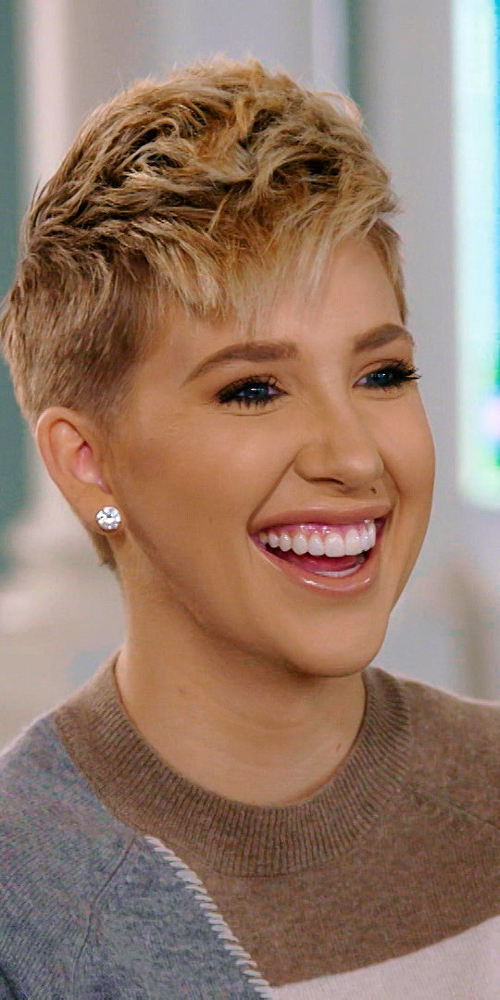

TV Show – Chrisley Knows Best
Savannah Chrisley

- She is Todd and Julie younger daughter
- In to fashion like her father
Designer Of Clothes
Relationships
- Todd and daugter have a close bond
- Chase and Savannah are one year apart and are very close and that they even tried living together in California, but did not workout because Savannah did not like to live in California
- She was engaged to a Nic Kerdiles
Talent
- Miss Tennessee in 2016
- Competitive in horseback riding
Personality
- witty
- intelligent
- kind
- giving person